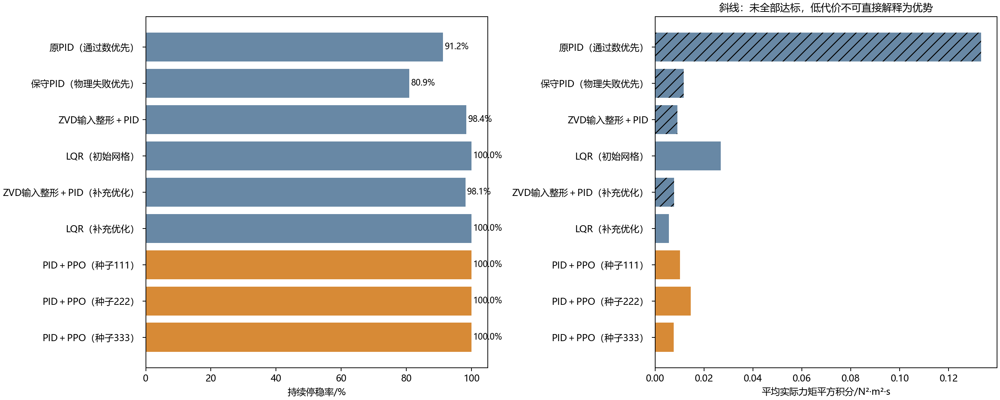
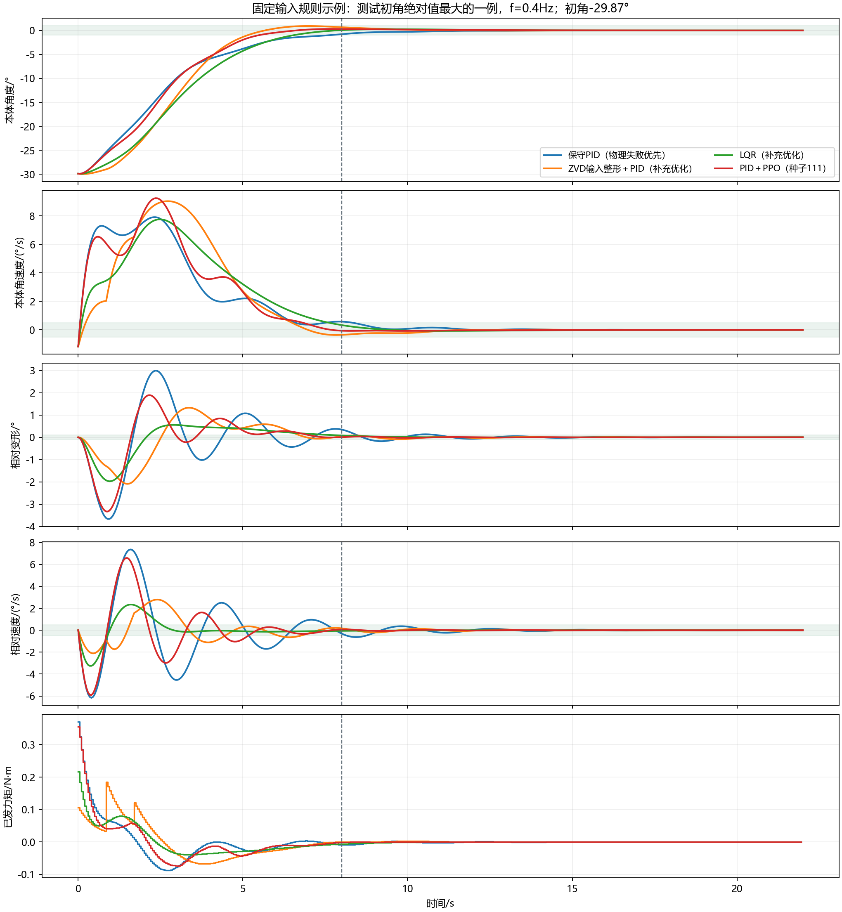

学习模型每0.05s输出连续力矩补偿。所有方法同时满足本体和附体的稳定要求，并接受相同力矩约束。
这里的任务是连续控制。最终结论同时检验三个从零训练的PPO模型，并保留充分搜索的PID、ZVD输入整形和LQR对照。
| 方法 | 持续停稳/640 | 物理失败 | 平均力矩平方积分 | 平均残余变形RMS/° |
|---|---|---|---|---|
| 原PID（通过数优先） | 584/640 | 27 | 0.1331790 | 0.43977 |
| 保守PID（物理失败优先） | 518/640 | 0 | 0.0117467 | 0.01339 |
| ZVD输入整形＋PID | 630/640 | 0 | 0.0091508 | 0.00626 |
| LQR（初始网格） | 640/640 | 0 | 0.0267880 | 0.00248 |
| ZVD输入整形＋PID（补充优化） | 628/640 | 0 | 0.0077119 | 0.00670 |
| LQR（补充优化） | 640/640 | 0 | 0.0055636 | 0.00436 |
| PID＋PPO（种子111） | 640/640 | 0 | 0.0101200 | 0.00502 |
| PID＋PPO（种子222） | 640/640 | 0 | 0.0144832 | 0.00536 |
| PID＋PPO（种子333） | 640/640 | 0 | 0.0075496 | 0.00350 |
先看持续停稳和物理失败，再比较代价。力矩平方积分不是电能；失败样本的低代价不代表控制更好。


4,718,592交互步；5,760回合独立测试；全量物理状态转移独立核验通过。640回合由128个独立初态在五个频率上重复，置信区间按初态组计算并校正36项比较。
模型局限：单柔性模态、理想执行器、无噪声、需要附体振动测量，没有硬件验证。完整参数、选择记录和不成功尝试均保留。
详细报告 · 全部配对统计 · 训练修正预声明 · 补充传统对照预声明
主测试之后，另从3825个已保存候选中只用开发/验证指标重选成功数优先的PID。新PID为593/640=92.66%，27次模型适用范围越界，比原PID更强，仍低于三个PPO的100%。这是事后复核，不伪装成先验主比较；另有640回合全量物理核验，本研究总测试回合数因此为6400。
10°越界只是模型适用范围限制，不等于实物结构损坏。